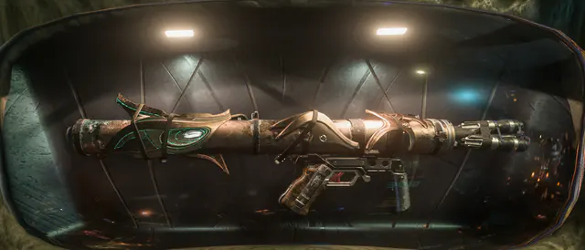
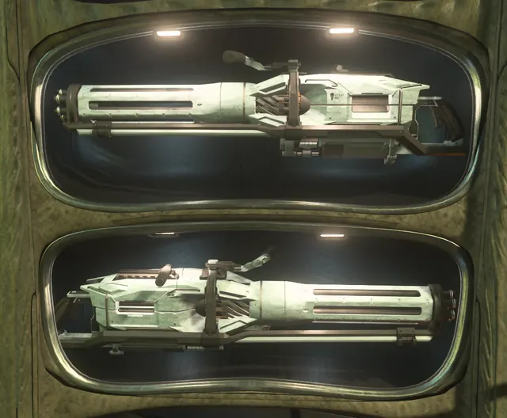
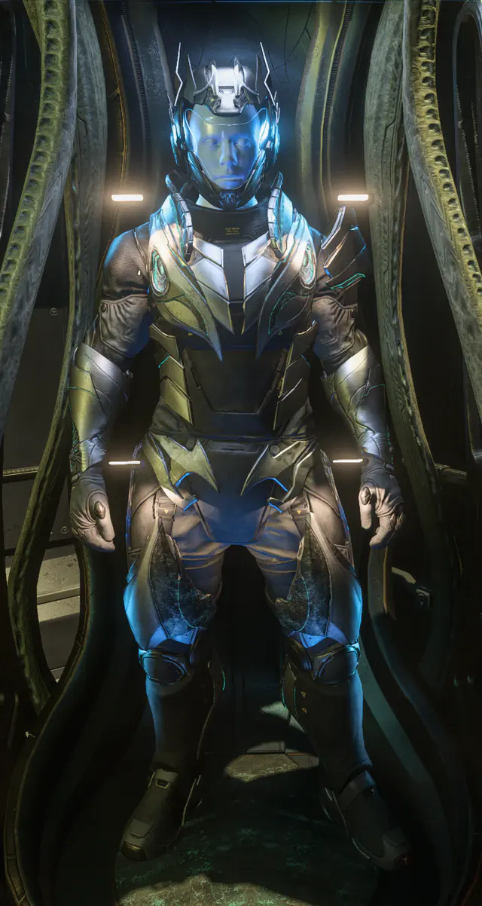
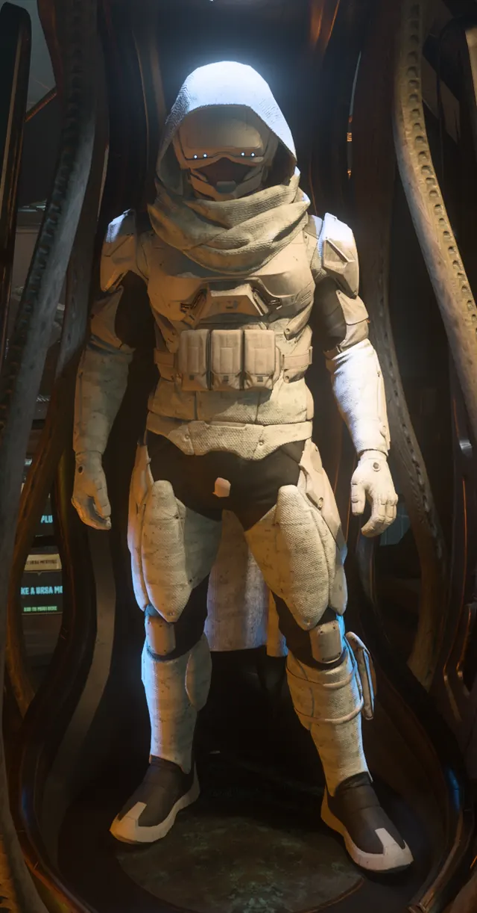
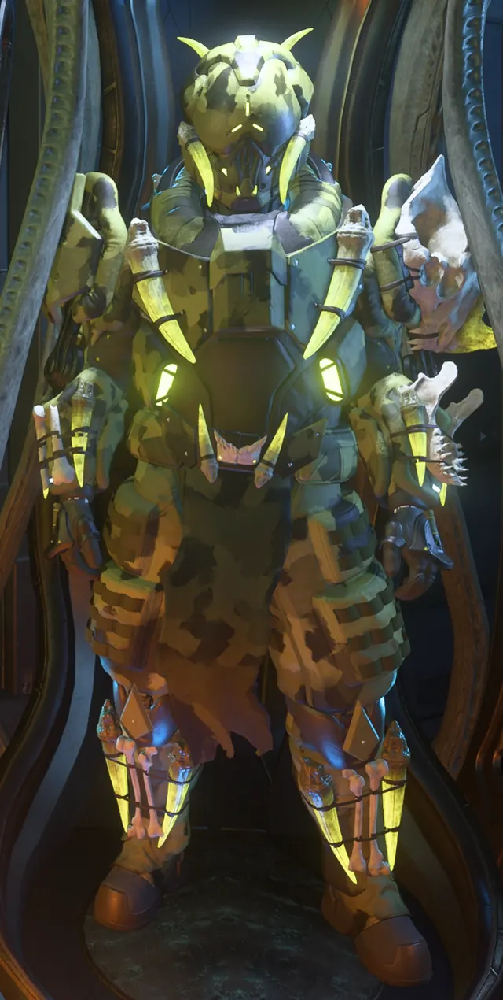
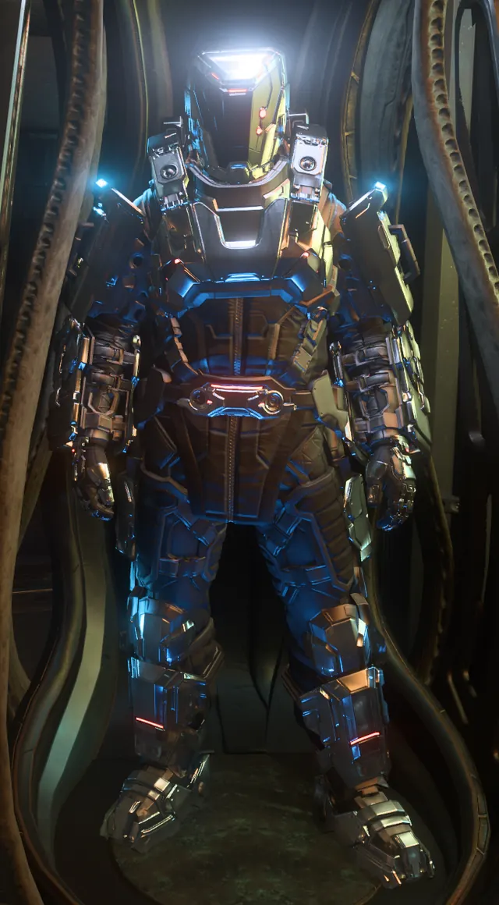

Trade Council Scrip for Favors?
필요 재료
- 50xCouncil Scrip
보상
- 1xWikelo Favor
스탠턴에 자리 잡은 바누(Banu) 상인이자 의뢰인. 스타시티즌에 처음 등장한 인간이 아닌 NPC예요. 필요한 재료를 모아 오면 특별하게 손본 무기·방어구·함선을 만들어 줍니다.
“위켈로는 바누 프로텍토라트의 제작 공방에서 은퇴했어요. 사람을, 인간을 정말 좋아해서 인간 영역으로 이사 와 일종의 제작소 겸 교역소를 차렸죠. 필요한 걸 가져다주면 멋진 걸 만들어 줄 거예요.”
위켈로를 직접 만날 수는 없지만, 스탠턴의 세 엠포리엄 정거장에서 그의 계약을 받을 수 있어요.
특정 교환 계약을 완료하면 평판이 오르고, 등급이 오를수록 새로운 계약이 열립니다.
필요 재료와 보상을 한눈에. 아이템 이름은 게임 속 영문 표기를 그대로 두었어요. 계약 이름을 누르면 위키 원문으로 이동합니다.
스크립·광물을 위켈로 호의(Wikelo Favor)로 바꾸는 계약. 다른 계약의 재료로 쓰입니다.
위켈로가 손본 특별한 개인 화기.




위켈로 전용 도색·개조 방어구와 슈트.






위켈로 특제 지상 차량.
위켈로가 개조해 주는 함선. 대부분 A·B 등급 부품이 장착된 채로 지급됩니다.
그 밖의 교환 계약.
검색 결과가 없어요.
위켈로 계약으로 받는 함선은 대부분 등급별 장비가 장착돼 있고, 모든 부품이 A 또는 B 등급이에요. 단, 골렘(Golem)은 Alpha 4.4.0 기준 부품이 기본값이며 무기만 NN-13 캐논 2문으로 바뀝니다.
| 계약 | 보상 함선 | 장비 등급 | 파워 플랜트 | 실드 발생기 | 퀀텀 드라이브 | 쿨러 |
|---|---|---|---|---|---|---|
| "Noxy Mod" | Nox | Civilian | 1x IonWave | N/A | N/A | 1x Tepilo |
| "Pulse Plus" | Pulse | Civilian | 1x Radix | N/A | N/A | 1x Kelvid |
| "Make a Ursa Mod" | Ursa Medivac | None | 1x MagnaBloom | 1x Castra | N/A | 1x Kelvid |
| "Where Wolf? Here Wolf" | L-21 Wolf | Stealth | 1x DeltaMax | 2x Veil | 1x Zephyr | 2x VaporBlock |
| "Most Special Wolf" | L-21 Wolf | Military | 1x JS-300 | 2x FR-66 | 1x VK-00 | 2x Glacier |
| "Golem Rocks" | Golem | Industrial | 1x Fortitude | 1x Bulwark | 1x Goliath | 1x Thermax |
| "Upgrade Intrepid" | Intrepid | None | 1x WhiteRose | 1x Palisade | 1x Atlas | 1x Ultra-Flow |
| "Fortune ship for you" | Fortune | Civilian | 1x Lotus | 3x 7SA 'Concord' | 1x Atlas | 1x Aufeis |
| "Spirit Cargo mod" | C1 Spirit | Civilian | 1x Lotus | 1x 7MA 'Lorica' | 1x Hemera | 1x Aufeis |
| "Zeus Special" | Zeus Mk II ES | Industrial | 2x Genoa | 4x Rampart | 1x Hemera | 2x Snowpack |
| "Zeus Cargo Special" | Zeus Mk II CL | Industrial | 2x Genoa | 3x Rampart | 1x Hemera | 2x Snowpack |
| "More than a Max" | Starlancer MAX | Civilian | 2x Lotus | 1x Parapet | 1x Hemera | 2x Aufeis |
| "Want Taurus ship" | Constellation Taurus | Military | 2x QuadraCell MT | 1x FR-86 | 1x XL-1 | 2x Avalanche |
| "Ready for Raft?" | RAFT | Industrial | 1x Sedulity | 3x Citadel | 1x Huracan | 1x Snowfall |
| "Prospects Look Good" | Prospector | Industrial | 1x Sedulity | 1x Guardian | 1x Colossus | 1x Snowpack |
| "Peregrine Wikelo Mod" | Sabre Peregrine | Competition | 2x LumaCore | 2x Jaghte | 1x FoxFire | 2x ZeroRush |
| "Firebird Mod" | Sabre Firebird | Military | 2x QuadraCell | 2x FR-66 | 1x VK-00 | 2x Glacier |
| "Build a Mod Scorpius" | Scorpius | Stealth | 2x Slipstream | 1x Umbra | 1x Spectre | 2x SnowBlind |
| "Wikelo Navy F7" | F7C-M Super Hornet Mk II | Military | 1x JS-400 | 2x FR-66 | 1x VK-00 | 2x Glacier |
| "Guardian Fight Mod" | Guardian | Military | 2x QuadraCell | 1x FR-76 | 1x VK-00 | 1x Glacier |
| "Guardian take down ship" | Guardian QI | Competition | 2x LumaCore | 1x Haltur | 1x SunFire | 1x AbsoluteZero |
| "Guardian Wik-X" | Guardian MX | Military | 1x Bolide | 2x CoverAll | 1x XL-1 | 1x PermaFrost |
| "F8 War Mod" | F8C Lightning | Military | 1x LuxCore | 2x FR-76 | 1x Colossus | 2x Glacier |
| "Sneaky Stabber" | F8C Lightning | Stealth | 1x Eclipse | 2x Umbra | 1x Colossus | 2x SnowBlind |
| "What is Terrapin?" | Terrapin Medic | Civilian | 1x IonSurge | 2x BLOC | 1x Hyperion | 2x Gelid |
| "New Move Big Starlancer Ship" | Starlancer TAC | Military | 1x Durango | 2x FullBlock | 1x Yeager | 1x Blizzard |
| "Starfighter Inferno Special" | Ares Star Fighter Inferno | Military | 2x Bolide | 2x CoverAll | 1x Yeager | 3x PermaFrost |
| "Sneaky Starfighter Ion" | Ares Star Fighter Ion | Stealth | 2x GammaMax | 2x Sheut | 1x Bolt | 3x IceBox |
| "Prowler More Utility" | Prowler Utility | Industrial | 1x Eclipse | 4x Citadel | 1x Huracan | 2x Snowfall |
| "Starlifter A2 War Mod" | A2 Hercules Starlifter | Military | 2x JS-500 | 3x FR-86 | 1x Balandin | 2x Mercury |
| "Asgard Fight Mod" | Asgard | Military | 2x Bolide | 4x CoverAll | 1x Yeager | 3x PermaFrost |
| "RSI Meteor Mod" | Meteor | Stealth | 1x Slipstream | 2x Mirage | 1x Zephyr | 2x VaporBlock |
| "Red Fight Apollo" | Apollo Triage | Stealth | 2x Lotus | 1x Parapet | 1x Hemera | 2x Aufeis |
위켈로는 Inside Star Citizen “Align and Mine” 편에서 내러티브 디렉터 데이브 해독(Dave Haddock)이 처음 공식 소개했어요.
이 페이지는 Star Citizen Wiki — Wikelo 문서(리비전 392918, 2026-10-03 기준)를 번역·재구성한 것으로, 원문과 같은 CC BY-SA 4.0 라이선스로 배포합니다. 게임 업데이트로 계약이 바뀌면 최신 내용은 위키 원문을 확인해 주세요.